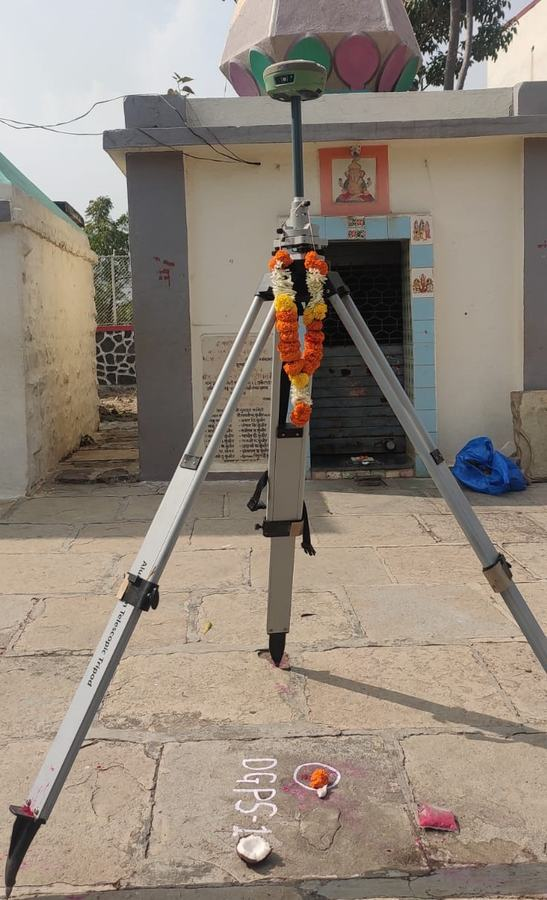
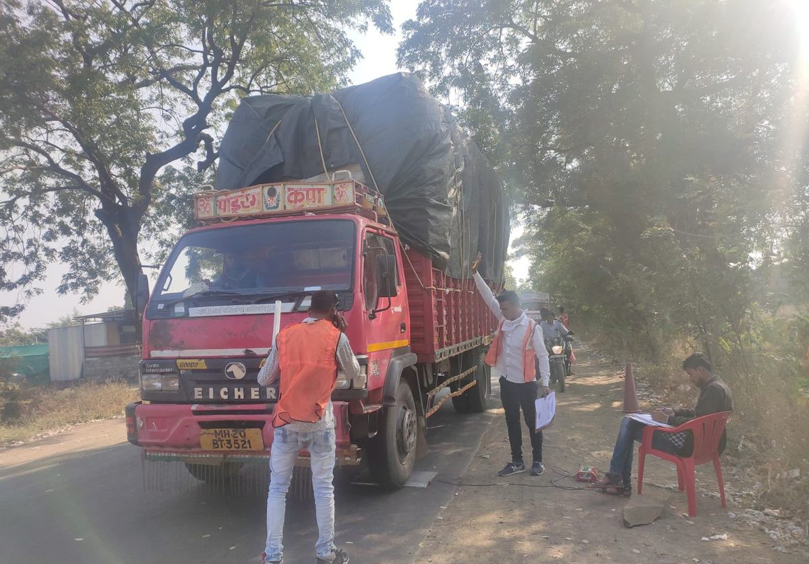

Home / Equipment
Equipment
The instruments, test equipment and software our survey, testing and design teams work with.
Survey instruments
Control, detail and levels for corridors, canals, command areas, plots and campuses, on the ground and from the air.

RTK DGPS receivers
A90 RTK, supplied by Janak Positioning
Control points, benchmarks and ground control for drone flights, and RTK survey where a total station would be slow.
4sets
Total stations
Kryptton K105R1000, 5″ accuracy
Detailed topographic survey, cross-sections, demarcation and setting out.
3nos.Auto levels
With staves, for double levelling
Carrying benchmarks along a road or canal and closing level circuits.

Survey drone
Flown with DGPS ground control
Orthophotos and terrain models for corridors, command areas and town planning, tied to control points on the ground.
Road and pavement testing
Condition surveys and structural tests for new roads, overlays and maintenance planning.

Network survey vehicle (NSV)
With laser profilometer, cameras and GPS
Roughness, rutting, surface distress and a road inventory, recorded at traffic speed.

Falling weight deflectometer (FWD)
Structural evaluation to IRC:115
Measures how the pavement deflects under a falling load, to design overlays and check new construction.

Benkelman beam
Deflection testing to IRC:81
Rebound deflection under a loaded truck, for overlay design on existing roads.

Bump integrator
Towed fifth-wheel unit
Riding quality of a road, reported as a roughness index.

Axle load pads
Portable weigh pads
Day and night weighing of trucks, to work out the vehicle damage factor for pavement design.

Traffic survey cameras
Video recording for classified counts
Classified traffic volume counts, recorded on video so that they can be checked.
Geotechnical and material testing
Subsurface investigation for bridges, ghats, intake works and buildings, and testing of soil, concrete and pavement layers.

NX core drilling rig
Diamond core drilling with double-tube core barrel
Boreholes in soil and rock, with standard penetration tests, core recovery and RQD logging.
1no.
Core boxes and logging kit
Cores boxed, labelled and photographed on site
Every run is logged by depth before the samples leave for the laboratory.

Plate load test set
Loading plates, jack and dial gauges
Safe bearing capacity of the founding stratum, tested in the foundation pit.
Concrete and pavement core cutter
Eibenstock stand with 152 mm and 202 mm diamond bits
Cores from concrete and bituminous layers, to check thickness, density and strength.
1no.
Laboratory tests such as CBR and free swell index are run on the samples we bring back, and every result is checked against what was seen on site.
Design office
Where field data becomes drawings, estimates and reports.
Design workstations and laptops
For CAD, GIS, hydraulic modelling and estimates
Used by our highway, bridge, hydraulic and geotechnical engineers and by CAD and GIS staff.
12nos.Plotters and printers
HP DesignJet T230 24-inch plotter and an A3 colour printer
Full-size drawings and report sets are printed in house.
2plotters
Software
- AutoCAD Civil 3D
- ESurvey CAD
- InfraWorks
- WaterGEMS
- QGIS
- HEC-RAS
Equipment list as of November 2026. Tell us the survey or the test you need and we will confirm what will be deployed on your site.

Have a survey, testing or design job coming up?
Send us the scope or the tender notice and we will reply with a methodology and fee.